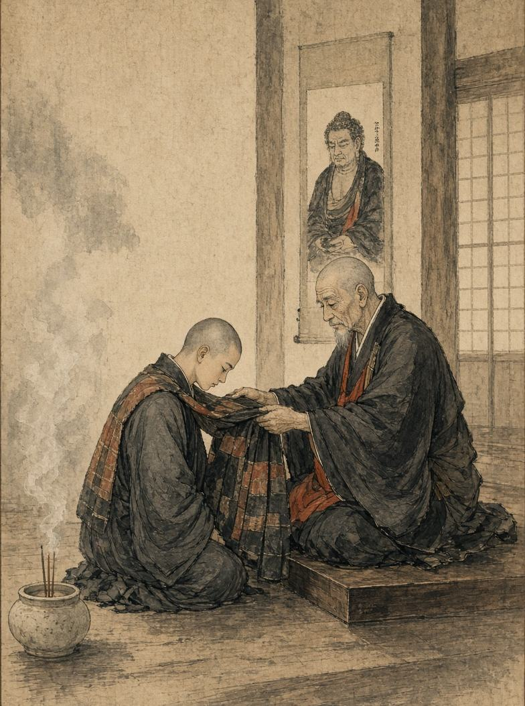

Обеты
Обет для монаха - это не просто запрет или правило. Это добровольное обещание, которое человек даёт самому себе и Сангхе.
Обет для монаха - это не просто запрет или правило. Это добровольное обещание, которое человек даёт самому себе и Сангхе. Обет может быть связан с духовной практикой, служением храму, определённой целью или желанием изменить собственный характер. В отличие от общих правил, которые соблюдают все монахи, особый обет может быть принят отдельным человеком на определённый срок или до выполнения поставленной цели.

Принятие обета
Монах, желающий принять особый обет, обращается к Бонзе и объясняет причину своего решения. Настоятель рассматривает просьбу и решает, соответствует ли она Дхарме и правилам храма. Если обет принят, монах объявляет о нём перед Сангхой и начинает его соблюдение. Обет может быть временным или постоянным. Например, монах может дать обещание в течение нескольких дней молчать вне необходимых разговоров, ежедневно проводить дополнительную медитацию, помогать бедным или отказаться от определённых удобств. Другой обет может быть связан с конкретным событием - например, монах обещает провести определённое количество времени в паломничестве или оказать помощь людям после крупного бедствия.
Обеты в жизни монаха
Особые обеты позволяют каждому монаху развивать собственную историю. Один может выбрать путь строгой дисциплины, другой - служение людям, третий - изучение Дхармы, а четвёртый посвятить себя помощи больным и раненым. Обет не должен становиться способом получить власть или преимущество над другими игроками. Его смысл заключается именно в добровольном ограничении себя или принятии дополнительной обязанности. Монах должен сам следить за тем, чтобы не нарушить данное слово.
Если монах намеренно нарушает свой обет, он может признаться Бонзе, принять последствия, попросить прощения или попытаться вновь заслужить доверие Сангхи. Таким образом, даже нарушение обета может стать частью развития персонажа.
Мир приходит изнутри. Не ищи его снаружи.Будда Шьякмуни